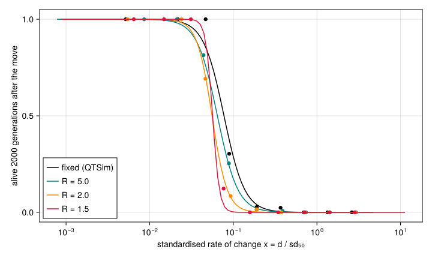

Density regulation in the paper’s populations
Simon Frost
Overview
Demography and evolutionary rescue showed, for one parameter set, that populations whose size follows their fitness die sooner than QTSim’s populations of fixed size. This vignette asks how much that changes the paper’s results (Pagel et al. 2025). It reruns the 710 populations that Replicating Pagel, Gardner and Meade (2025) sampled from the paper’s 119,984, with the same parameters, the same seeds and the same 2000-generation horizon after the optimum starts to move, under Beverton–Holt density regulation with growth rates $R = 5$, $2$ and $1.5$ offspring per survivor at low density, and compares them with that vignette’s reruns at QTSim’s fixed size.
Like vignette 09, it needs the paper’s results table in Repository/Results next to the package’s folder, and it reads that vignette’s reruns at a fixed size from replication_runs.csv.
Setup
using QTLSim
using CairoMakie, DelimitedFiles, Printf, Random, Statistics, XLSX
CairoMakie.activate!(type = "png")
const PKG = normpath(joinpath(@__DIR__, "..", ".."))
const MASTER = normpath(joinpath(PKG, "..", "Repository", "Results", "Master Output file.xlsx"))
const FIXED = normpath(joinpath(@__DIR__, "..", "09_replicating_pagel_2025", "replication_runs.csv"))
isfile(MASTER) && isfile(FIXED) || error("this vignette needs the paper's results table and vignette 09's reruns")
const MOVE_GEN = 10_000
const CAP = 2_000
const POP = 1000
const SAMPLE_SIZE = Dict(100 => 125, 500 => 125, 1000 => 75, 5000 => 30)
const GROWTH = (5.0, 2.0, 1.5)
Threads.nthreads()6The populations, their parameters and the sample are vignette 09’s.
function read_master(path)
dt = XLSX.readtable(path, "Master output file")
lab = strip.(string.(dt.column_labels))
num(v) = v isa AbstractString ? parse(Float64, v) : v === missing ? NaN : Float64(v)
f(name) = num.(dt.data[findfirst(==(name), lab)])
(; L = round.(Int, f("No. Loci")), u = f("recombination u=3,5"), h2 = f("Heritability"),
VP = f("PhenotypeVar"), m = f("MutationScalar Vm/Ve"), d = f("d_env"), ω = f("w, fitness function sd"))
end
t = read_master(MASTER)
function stratified_sample(t; n = SAMPLE_SIZE, seed = 2025)
rng = Xoshiro(seed)
rows = Int[]
for L in (100, 500, 1000, 5000), u in (3.0, 5.0)
s = findall(i -> t.L[i] == L && t.u[i] == u, eachindex(t.L))
append!(rows, sort(shuffle(rng, s)[1:n[L]]))
end
rows
end
rows = stratified_sample(t)
length(rows)710Measures when the population size varies
The paper’s measures, as vignette 09 computes them, with one change: 50% mortality is the first generation after the move at which the fraction of the population surviving selection is closest to one half, rather than the number of survivors closest to N/2. With a fixed size the two are the same, so the measures of vignette 09’s reruns are unchanged. N_eq is the population size before the move and N50 at 50% mortality.
function measures(o, d; movegen = MOVE_GEN)
gen, zbar, sd, ns, N = o.gen, o.pheno_mean, sqrt.(o.pheno_var), o.nsurv, o.popsize
i0 = findfirst(==(movegen - 1), gen)
post = findall(>=(movegen), gen)
k = isempty(post) ? lastindex(gen) : post[argmin(abs.(ns[post] ./ N[post] .- 0.5))]
T = o.extinct ? gen[end] + 2 - movegen : length(post)
T50 = gen[k] + 2 - movegen
sd50 = sd[k]
x = d / sd50
rate_ext = (zbar[end] - zbar[i0]) / T / sd50
(; T, extinct = o.extinct, T50, sd50, x, rate_ext, lag = x - rate_ext, VG = o.geno_var[i0],
N_eq = mean(N[i0-99:i0]), N50 = N[k])
end
function rerun(t, i, R; cap = CAP)
p = Params(NoGenerations = MOVE_GEN + cap, Sample = 1, PopSize = POP, Ploidy = 2, NoQTL = t.L[i],
PhenotypeVar = t.VP[i], Heritability = t.h2[i], MutationScalar = t.m[i],
MutationRatePerGamete = 1e-4, RecombPoissonMean = t.u[i], InitFitnessSD = t.ω[i],
MoveFitnessSDGen = MOVE_GEN, MoveFitnessSD = t.d[i], MoveType = :continuous,
Demography = :beverton_holt, GrowthRate = R)
o = simulate(p; seed = i)
findfirst(==(MOVE_GEN - 1), o.gen) === nothing && return nothing # died before the move
(; row = i, L = t.L[i], u = t.u[i], measures(o, t.d[i])...)
end
const FIELDS = (:row, :L, :u, :T, :extinct, :T50, :sd50, :x, :rate_ext, :lag, :VG, :N_eq, :N50)
function read_runs(path)
a, h = readdlm(path, ',', header = true)
c(f) = a[:, findfirst(==(string(f)), vec(h))]
(; row = Int.(c(:row)), L = Int.(c(:L)), u = Float64.(c(:u)), T = Int.(c(:T)), extinct = Bool.(c(:extinct)),
T50 = Int.(c(:T50)), sd50 = Float64.(c(:sd50)), x = Float64.(c(:x)), rate_ext = Float64.(c(:rate_ext)),
lag = Float64.(c(:lag)), VG = Float64.(c(:VG)),
N_eq = :N_eq in Symbol.(vec(h)) ? Float64.(c(:N_eq)) : fill(Float64(POP), size(a, 1)),
N50 = :N50 in Symbol.(vec(h)) ? Float64.(c(:N50)) : fill(Float64(POP), size(a, 1)))
end
"Rerun the sample with growth rate `R`, caching each run, longest first; an interrupted run resumes."
function run_sample(t, rows, R)
cache = joinpath(@__DIR__, "demography_runs_R$(R).csv")
isfile(cache) || open(io -> println(io, join(FIELDS, ',')), cache, "w")
done = countlines(cache) > 1 ? Set(read_runs(cache).row) : Set{Int}()
todo = filter(∉(done), rows)
lk = ReentrantLock()
Threads.@threads :greedy for i in todo[sortperm(t.L[todo]; rev = true)]
r = rerun(t, i, R)
r === nothing && continue
lock(lk) do
open(io -> println(io, join((getfield(r, f) for f in FIELDS), ',')), cache, "a")
end
end
read_runs(cache)
end
nothingEach growth rate takes about an hour on ten threads, mostly for the populations with many loci, so the runs are stored next to this vignette, as in vignette 09.
fixed = read_runs(FIXED)
runs = Dict(R => run_sample(t, rows, R) for R in GROWTH)
k = findall(==(100), runs[2.0].L)[1:2] # the stored runs come from this code
check = [rerun(t, runs[2.0].row[j], 2.0) for j in k]
(stored_runs_reproduce = all(getfield(check[a], f) == getfield(runs[2.0], f)[k[a]] for a in 1:2
for f in (:T, :T50, :sd50, :x, :rate_ext, :VG)),
runs = Dict(R => length(r.row) for (R, r) in runs))(stored_runs_reproduce = true, runs = Dict(5.0 => 703, 2.0 => 697, 1.5 => 694))Results
Each demography’s runs, paired with the fixed-size reruns of the same populations. Every stratum counts equally, as in vignette 09.
weight(L) = 1 / SAMPLE_SIZE[L]
function wquantile(v, w, p)
o = sortperm(v); c = cumsum(w[o])
v[o[searchsortedfirst(c, p * c[end])]]
end
med(v, w) = (ok = isfinite.(v); wquantile(v[ok], w[ok], 0.5))
const WALL = sum(weight.(t.L[rows])) # populations dead before the move count as dead
share(r) = 100 * sum(weight.(r.L) .* .!r.extinct) / WALL
sets = [("fixed (QTSim)", fixed); [("R = $(R)", runs[R]) for R in GROWTH]]
println("| | ", join(first.(sets), " | "), " |")
println("|:--|", repeat("--:|", length(sets)))
row(name, f) = println("| ", name, " | ", join((f(r) for (_, r) in sets), " | "), " |")
row("population size before the move", r -> @sprintf("%.0f", med(r.N_eq, weight.(r.L))))
row("died before the move (of $(length(rows)))", r -> string(length(rows) - length(r.row)))
row("alive 2000 generations after the move", r -> @sprintf("%.1f%%", share(r)))
row("generations to extinction (median)", r -> @sprintf("%.0f", med(Float64.(r.T), weight.(r.L))))
row("generations to 50% mortality (median)", r -> @sprintf("%.0f", med(Float64.(r.T50), weight.(r.L))))
row("rate of change to extinction (median)", r -> @sprintf("%.3f", med(r.rate_ext, weight.(r.L))))
row("standardised lag (median)", r -> @sprintf("%.3f", med(r.lag, weight.(r.L))))
sv(r) = findall(.!r.extinct)
row("rate of change, populations alive at 2000 (median)",
r -> isempty(sv(r)) ? "–" : @sprintf("%.3f", med(r.rate_ext[sv(r)], weight.(r.L[sv(r)]))))| fixed (QTSim) | R = 5.0 | R = 2.0 | R = 1.5 | |
|---|---|---|---|---|
| population size before the move | 1000 | 984 | 977 | 969 |
| died before the move (of 710) | 0 | 7 | 13 | 16 |
| alive 2000 generations after the move | 8.8% | 6.7% | 4.4% | 3.4% |
| generations to extinction (median) | 137 | 82 | 60 | 51 |
| generations to 50% mortality (median) | 45 | 45 | 49 | 46 |
| rate of change to extinction (median) | 0.058 | 0.050 | 0.044 | 0.040 |
| standardised lag (median) | 0.372 | 0.404 | 0.440 | 0.451 |
| rate of change, populations alive at 2000 (median) | 0.032 | 0.032 | 0.029 | 0.023 |
Some populations do not reach the move at all. Under density regulation, 7, 13 and 16 of the 710 die during the 10,000 generations of stabilising selection, for $R = 5$, $2$ and $1.5$. All of them have very strong stabilising selection, with a fitness function narrower than the phenotypic distribution (ω between 0.04 and 0.9 phenotypic standard deviations, against a median of 32 in the rest). Their mean fitness at the optimum is below $1/R$, so they cannot replace themselves even when perfectly adapted. At a fixed size QTSim refills them every generation and they survive to the move. They count as dead in the share alive.
Population by population, against the same population at a fixed size:
println("| | ", join(("R = $(R)" for R in GROWTH), " | "), " |")
println("|:--|", repeat("--:|", length(GROWTH)))
paired(R) = (r = runs[R]; j = indexin(r.row, fixed.row); ok = j .!== nothing; (r, Int.(j[ok]), findall(ok)))
function pairrow(name, f)
println("| ", name, " | ", join((f(paired(R)...) for R in GROWTH), " | "), " |")
end
pairrow("time to extinction / fixed (median, both died)", (r, jf, jr) -> begin
b = findall(i -> r.extinct[jr[i]] && fixed.extinct[jf[i]], eachindex(jr))
@sprintf("%.2f", med(r.T[jr[b]] ./ fixed.T[jf[b]], weight.(r.L[jr[b]])))
end)
pairrow("alive at a fixed size, dead here", (r, jf, jr) -> string(count(i -> r.extinct[jr[i]] && !fixed.extinct[jf[i]], eachindex(jr))))
pairrow("dead at a fixed size, alive here", (r, jf, jr) -> string(count(i -> !r.extinct[jr[i]] && fixed.extinct[jf[i]], eachindex(jr))))| R = 5.0 | R = 2.0 | R = 1.5 | |
|---|---|---|---|
| time to extinction / fixed (median, both died) | 0.60 | 0.44 | 0.37 |
| alive at a fixed size, dead here | 14 | 27 | 34 |
| dead at a fixed size, alive here | 0 | 0 | 0 |
The sustainable rate
The paper’s measure of how fast an environment can change is a standardised rate: the change of the optimum per generation in phenotypic standard deviations at 50% mortality, $x = d/\mathrm{sd}_{50}$. The fraction of populations alive 2000 generations after the move falls with $x$; a logistic regression on $\log x$ gives, for each demography, the rate at which half of them are alive.
"Weighted logistic regression of `y` on `[1 log x]`, by Newton's method."
function logistic(x, y, w)
X = [ones(length(x)) log.(x)]; b = zeros(2)
for _ in 1:50
μ = 1 ./ (1 .+ exp.(-X * b))
g = X' * (w .* (y .- μ)); H = X' * (X .* (w .* μ .* (1 .- μ)))
b += H \ g
end
b
end
x50 = map(sets) do (name, r)
ok = isfinite.(r.x) .& (r.x .> 0)
b = logistic(r.x[ok], Float64.(.!r.extinct[ok]), weight.(r.L[ok]))
(; name, x50 = exp(-b[1] / b[2]), b)
end
for s in x50
@printf("%-14s half alive at x = %.4f\n", s.name, s.x50)
endfixed (QTSim) half alive at x = 0.0774
R = 5.0 half alive at x = 0.0645
R = 2.0 half alive at x = 0.0557
R = 1.5 half alive at x = 0.0565fig = Figure(size = (720, 430))
ax = Axis(fig[1, 1], xscale = log10, xlabel = "standardised rate of change x = d / sd₅₀",
ylabel = "alive 2000 generations after the move")
colors = [:black, :teal, :darkorange, :crimson]
for (c, (name, r), s) in zip(colors, sets, x50)
ok = isfinite.(r.x) .& (r.x .> 0)
xs = r.x[ok]; alive = .!r.extinct[ok]; w = weight.(r.L[ok])
edges = exp.(range(log(minimum(xs)), log(maximum(xs)), length = 13))
for b in 1:12
i = findall(v -> edges[b] <= v <= edges[b+1], xs)
length(i) >= 5 && scatter!(ax, [exp(mean(log.(xs[i])))], [sum(w[i] .* alive[i]) / sum(w[i])], color = c)
end
g = exp.(range(log(minimum(xs)), log(maximum(xs)), length = 100))
lines!(ax, g, 1 ./ (1 .+ exp.(-(s.b[1] .+ s.b[2] .* log.(g)))), color = c, label = name)
end
axislegend(ax, position = :lb)
fig
Figure 1: Fraction of populations alive 2000 generations after the optimum starts to move, against the standardised rate of change, binned (points) and the logistic fit (lines), by demography. Strata weighted equally.
Summary
Density regulation moves every one of the paper’s headline numbers in the same direction. No population in the sample survives better under density regulation than at a fixed size.
- Survival. 8.8% of populations are alive 2000 generations after the move at a fixed size (strata weighted equally). Under density regulation the figure is 6.7%, 4.4% and 3.4% for $R = 5$, $2$ and $1.5$.
- Time to extinction. It is the most affected measure. The median falls from 137 generations to 82, 60 and 51. Population by population, a density-regulated run lasts 0.60, 0.44 and 0.37 times as long as the same population at a fixed size.
- Before the move. Up to 16 populations with very strong stabilising selection cannot persist even at the optimum.
- 50% mortality. The time to 50% mortality barely changes (45–49 generations), and neither does the standard deviation that the paper’s rates are standardised by. Most of the extra loss comes after the population has fallen behind, when a fixed-size population is still refilled and a density-regulated one shrinks.
- The sustainable rate. At a fixed size, half of the populations survive a standardised rate of change of 0.077 phenotypic standard deviations per generation; under density regulation, 0.065, 0.056 and 0.057. With $R = 2$ and $R = 1.5$ the midpoint is about a quarter lower, and the two cannot be told apart.
- Survivors’ rate. The median rate of change sustained by populations still alive 2000 generations after the move is 0.032 at a fixed size, the paper’s “about 3%”. It stays at 0.032 with $R = 5$, and falls to 0.029 with $R = 2$ and to 0.023 with $R = 1.5$.
The paper’s conclusion that maximum sustainable rates are low is therefore, if anything, conservative. With QTSim’s fixed population size its estimates are upper bounds: a population that has to make good its own losses sustains about a quarter less, and, once it can no longer keep up, dies in about half the time.
Pagel, Mark, Jacob D. Gardner, and Andrew Meade. 2025. “Quantitative-Genetic Analysis of Directional Adaptation Suggests Low Maximum Sustainable Rates of Change in Agreement with Data from Field Populations.” Scientific Reports 15. https://doi.org/10.1038/s41598-025-24445-2.